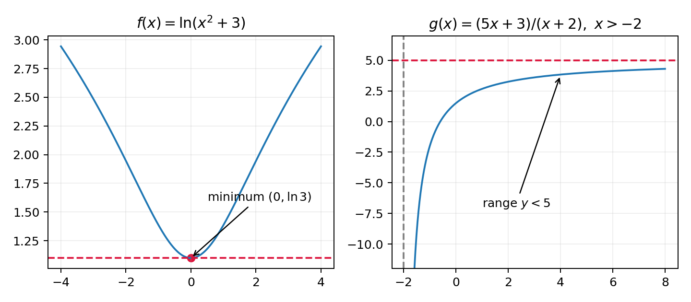

In this question you must show all stages of your working.
Solutions relying entirely on calculator technology are not acceptable.
The functions $f$ and $g$ are defined by
$$f(x)=\ln(x^2+3),\quad x\in\mathbb R$$
$$g(x)=\frac{3+5x}{x+2},\quad x\in\mathbb R,\ x>-2$$
(a) State the range of $f$. (1)
(b) Find $g^{-1}$. (3)
(c) Find $fg(0)$. (2)
(d) Find the exact value of $a$ for which $g(e^{2a})=f\!\left(\sqrt{e^4-3}\right)$. (3)
[9 marks: (a)1, (b)3, (c)2, (d)3]
Strategy. Range means outputs. Since $x^2\ge0$,
$$x^2+3\ge3.$$
The logarithm is strictly increasing, so applying $\ln$ preserves the inequality:
$$f(x)=\ln(x^2+3)\ge\ln3.$$
The endpoint is included because $f(0)=\ln3$. Also $f(x)\to\infty$ as $|x|\to\infty$, so there is no upper bound.
Let $y=g(x)$ and clear the denominator:
$$y=\frac{5x+3}{x+2}$$
$$y(x+2)=5x+3$$
$$xy+2y=5x+3.$$
Collect the $x$-terms and factor:
$$xy-5x=3-2y$$
$$x(y-5)=3-2y$$
$$x=\frac{3-2y}{y-5}.$$
Rename the inverse input:
The inverse domain is the original range. Rewrite
$$g(x)=5-\frac7{x+2}.$$
Because $x>-2$, we have $x+2>0$, hence $7/(x+2)>0$ and therefore $g(x)<5$. As $x\to-2^+$, $g(x)\to-\infty$; as $x\to\infty$, $g(x)\to5^-$. Thus
Composition is read right to left:
$$fg(0)=f(g(0)).$$
First,
$$g(0)=\frac{5(0)+3}{0+2}=\frac32.$$
Now substitute the whole result into $f$:
$$f\!\left(\frac32\right)=\ln\!\left[\left(\frac32\right)^2+3\right]$$
$$=\ln\!\left(\frac94+\frac{12}4\right)=\ln\!\left(\frac{21}4\right).$$
Not covered in the lesson — official-reference reconstruction below.
Evaluate the right-hand function first:
$$f\!\left(\sqrt{e^4-3}\right)=\ln\!\left[\left(\sqrt{e^4-3}\right)^2+3\right]$$
$$=\ln(e^4-3+3)=\ln(e^4)=4.$$
Hence $g(e^{2a})=4$. Substitute $e^{2a}$ for every $x$ in $g$:
$$\frac{5e^{2a}+3}{e^{2a}+2}=4.$$
Cross-multiply:
$$5e^{2a}+3=4e^{2a}+8$$
$$e^{2a}=5.$$
Take natural logarithms:
$$\ln(e^{2a})=\ln5$$
$$2a=\ln5$$
